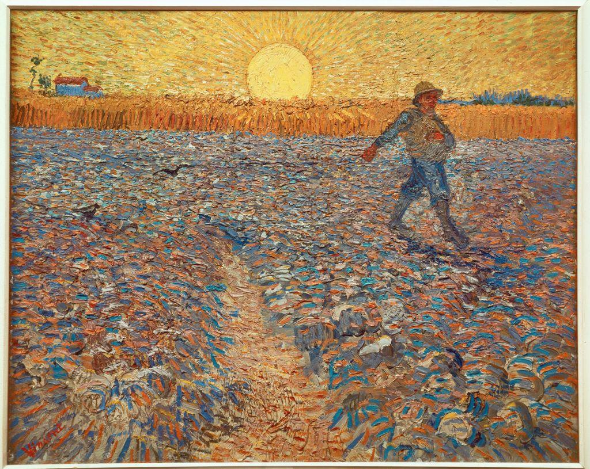

Look at the painting below for a full minute before you read the caption. Notice what your body does before your mind names anything. Where does the warmth sit? What feeling arrives first?

Van Gogh did not choose that enormous yellow sun and violet-blue field because a photograph looked that way; he chose them for their feeling. Yellow and violet sit directly across the color wheel from each other, and set side by side they seem to vibrate. The subject is a simple act, a farmer sowing seed, but the color turns it into something charged and hopeful. That is the whole idea of this Studio: color carries emotion on purpose.
Line, shape, and value all ask the viewer to look. Color does not ask. It arrives before you have decided to pay attention, the way a room's warmth or chill reaches you the instant you step inside. That is why color is the most emotional element in art, and the one an artist must handle most deliberately.
A beginner treats color as decoration, filling in shapes with whatever the object "really is." An artist treats color as a decision. The same lemon can be painted to feel sour and electric or soft and sleepy. Nothing about the lemon changed. The color choices did.
The same simple subject, a bowl of fruit, shown three ways. Only the palette changes.
not a copy.
Three words describe any color, and you will use all three this Studio. Meet them by name now.
You can already see accurately and compose an image. Color is the next decision, and it reaches a viewer fastest. An artist who cannot control color is at its mercy, feeling however the colors happen to feel; an artist who can control it decides the feeling in advance.
Your project for these two weeks is Three Moods, One Subject. You will choose one subject, an object, a place, or a figure, and make three versions of it that each communicate a different mood, changing color and nothing essential else. By the end, you will be able to point to the exact color decisions that made each version feel the way it does.
▶ Before you read on, name one color you strongly associate with a feeling (calm, anger, comfort). Then open this.
- 1 The Loudest Element · you are here. Why color reaches the viewer first.
- 2 Van Gogh and the Fauves · how artists turned color loose from reality (a critique demonstration).
- 3 The Color Wheel · skill builder: primary/secondary, complementary, analogous, warm/cool.
- 4 Color & Mood · skill builder: value, intensity, and symbolic color set feeling.
- 5 Plan & Create · choose your subject, plan three palettes, VR gallery, begin the artwork.
- 6 Refine, Reflect & Present · finish, self-critique, artist statement, portfolio.
Color speaks before you do. Van Gogh did not paint the color a field happened to be; he painted the color the feeling needed. For the next two weeks you will take one subject and, by choosing color deliberately, make it say three different things.